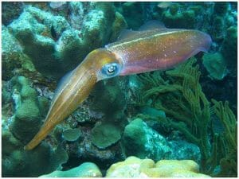
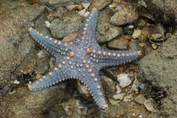
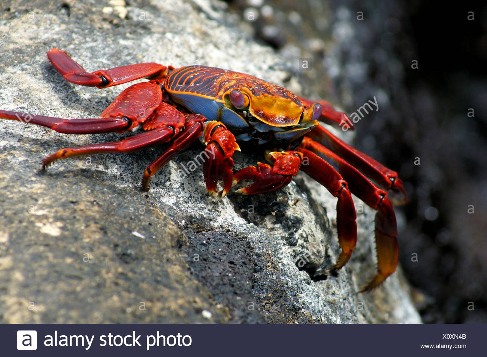

Invertebrates are animals that neither possess nor develop a vertebral column, derived from the notochord. This includes all animals apart from the subphylum Vertebrata. Familiar examples of invertebrates include arthropods, mollusks, annelid, and cnidarians
Invertebrates are animals that don’t have a backbone. The vertebral column is another name for the backbone. Over 90% of all species on Earth are invertebrates, and invertebrate species have been found in the fossil record as far back as 600 million years ago. Molecular biology studies suggest that all invertebrates evolved from a single invertebrate group.
Example of images of some inverterbrates:
  